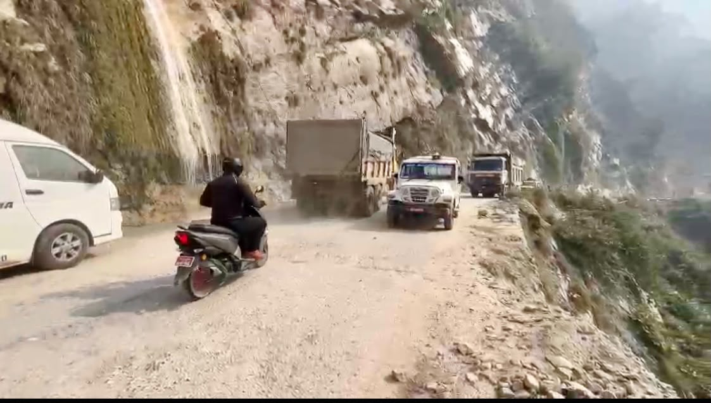
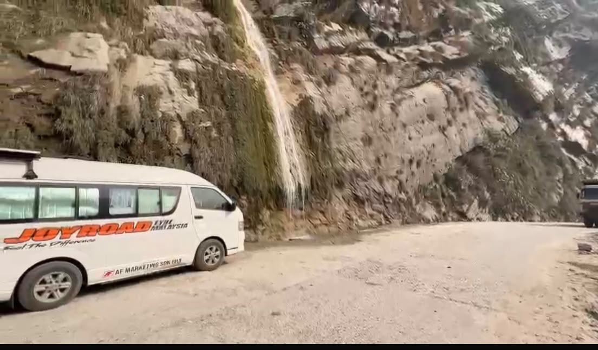

Real Story · 中文
美是美，危险也是真的危险。
10/12/2023，我决定开回 India。 不是因为 Nepal 不美，而是因为 Nepal 的 road condition 真的让我害怕。
那些路有时候美得很夸张。 山、河、悬崖、瀑布、雾气、远处的 valley，全都在眼前。 但同时，路面又破、又窄、又有施工车、truck、dust，还有很多地方看起来离 cliff edge 很近。
这种美很矛盾。 一边让你想停下来拍照，一边又让你不敢分心太久。 它像一个很迷人的人，很漂亮，可是很危险。
Toyotaki 不是小车，也不是当地熟悉山路的小巴。 它是一辆 campervan，里面是我的床、厨房、物品、生活，还有整趟旅程。 每一次经过这样的路，我都不只是驾驶一辆车，而是在移动一个家。
所以我后来决定回 India。 有些决定不是因为你不喜欢一个地方，而是因为你知道自己的 limit。 Nepal 很美，但那段路让我明白：美丽和危险，有时候会一起出现。

Supplementary Video · Beautiful Danger
The road was moving under Toyotaki.
This short video preserves the feeling of the Nepal mountain road better than a still photo can. The scenery is beautiful: cliffs, falling water, mountain air, and the curve of the road. But at the same time, the road surface is rough, narrow, dusty, and shared with trucks.
This was the kind of road that made Tuzi understand why beauty and danger can appear in the same frame. Toyotaki was not only driving through scenery — she was carrying a whole mobile home through unstable mountain road.
English Memory Summary
Beautiful, but frightening.
On 10/12/2023, Tuzi decided to drive back toward India because the road condition in Nepal had become frightening.
The scenery was extraordinary: mountain cliffs, waterfalls, valleys, and mist. But the same road was also narrow, rough, dusty, and shared with trucks and construction vehicles. In many places, beauty and danger appeared in the same frame.
For Toyotaki, this was not just another mountain drive. Toyotaki was a campervan carrying Tuzi’s bed, kitchen, belongings, and the whole journey. Driving through such roads meant moving a home across unstable terrain.
The decision to return toward India was not a rejection of Nepal. It was an acknowledgement of risk, vehicle limits, and the need to continue the larger journey safely.
Heart Statement
有些路，美到让你心动，也危险到让你清醒。
Nepal 的山路很美。 可是我不能只看美。
我还要看 Toyotaki 的重量、路面的状态、悬崖的位置、我的体力， 还有后面还很长很长的旅程。
The road was beautiful. But beauty does not cancel danger.